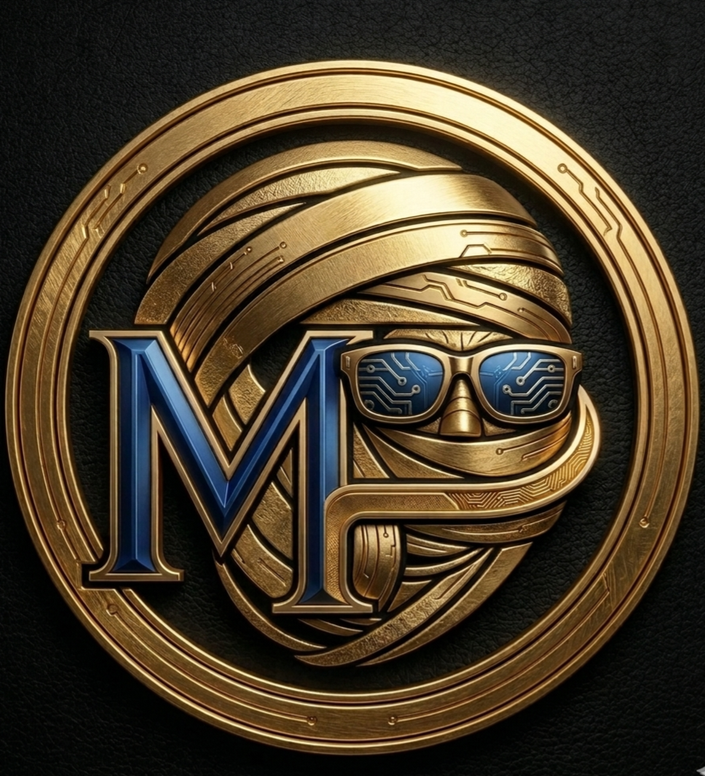

مطوّر تطبيقات مهتم بخدمة اللغة الطارقية والعلوم الشرعية من خلال التقنية.
أنا محمد متن منصوري، أسعى لتقديم تطبيقات إسلامية ولغوية تخدم مجتمعنا، تجمع بين سهولة الاستخدام وجودة المحتوى. أؤمن بأن التقنية يجب أن تُسخر لنشر العلم النافع وحفظ اللغات.